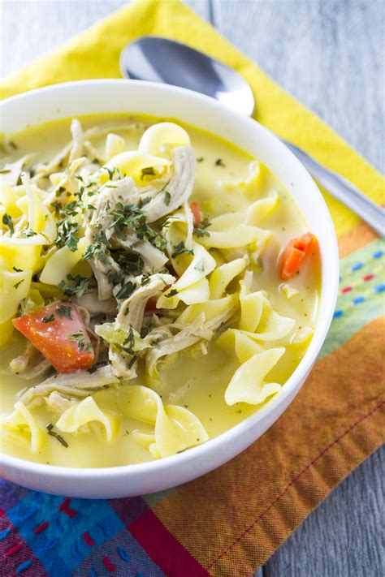

Chicken Noodle Soup

Photo Source
Description
The ultimate feel-good food. Too ultimate for a proper description.
Ingredients
- Chicken thighs. Two pounds should be enough.
- Chicken broth. Ten cups sould be enough.
- Onion. You're gonna need the whole onion, if not more. Should be diced.
- Garlic. As many cloves as you prefer. Should be diced.
- Cooking oil. At your preference, though I suggest olive oil.
- Celery. About four stalks. Should be chopped.
- Carrots. About four carrots. Should be chopped.
- Noodles. Three cups should be enough.
- Salt and pepper.
Steps
The following assumes you have everything chopped and the chicken clean and dry.
- Add salt and pepper to the chicken. Add chicken with the cooking oil on a pan over medium heat.
- Cook chicken until golden brown, then remove the chicken from the pot and remove its skin.
- Add onion and garlic to the pot and let cook for a couple minutes. Add broth, stir, and bring the contents of the pan to a boil.
- Add chicken back into pan, along with celery, carrots, and other ingredients of your choosing such as bay leaves and thyme. Reduce the heat, cover the pot, and let the pot simmer for half an hour.
- Once the chicken is tender, take it out onto a plate, and add noodles into the pan. Cover the pot and let simmer for 20 minutes or until noodles are tender.
- When chicken is cool enough to touch, shred the meat into small pieces and remove the bones. Add chicken back into the pan.
- Add salt and pepper and any other spices to your liking. When the meal is ready, serve and enjoy.
Home